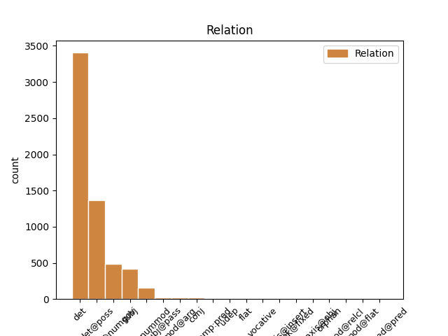
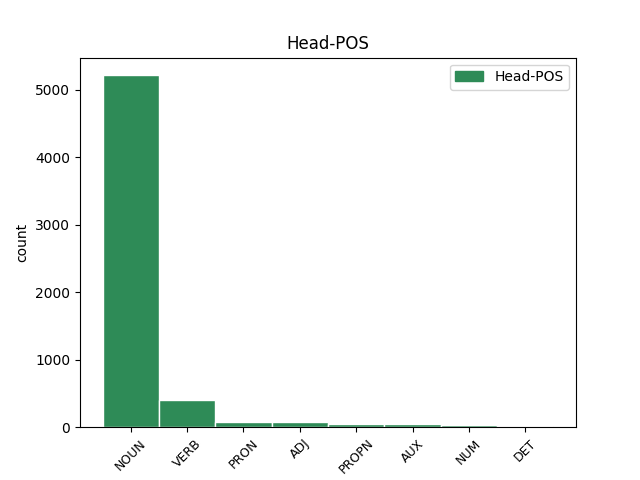
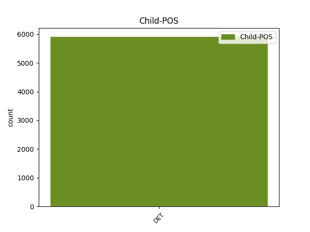

Distribution of features within this leaf



Agreement Rules sorted by frequency.
- When the dependent token is the determiner(det) of the head token, and the dependent token is DET.
1 Wszyscy _ _ _ _ 0 _ _ _
2 podzielamy _ _ _ _ 0 _ _ _
3 tę ten DET adj:sg:acc:f:pos Case=Acc|Gender=Fem|Number=Sing|PronType=Dem 5 det _ _
4 samą _ _ _ _ 0 _ _ _
5 ideę idea NOUN subst:sg:acc:f Case=Acc|Gender=Fem|Number=Sing 0 _ _ _
6 : _ _ _ _ 0 _ _ _
7 mamy _ _ _ _ 0 _ _ _
8 swobodę _ _ _ _ 0 _ _ _
9 przepływu _ _ _ _ 0 _ _ _
10 orzeczeń _ _ _ _ 0 _ _ _
11 sądowych _ _ _ _ 0 _ _ _
12 . _ _ _ _ 0 _ _ _
1 W _ _ _ _ 0 _ _ _
2 uzasadnieniu _ _ _ _ 0 _ _ _
3 swojego _ _ _ _ 0 _ _ _
4 wniosku _ _ _ _ 0 _ _ _
5 o _ _ _ _ 0 _ _ _
6 udzielenie _ _ _ _ 0 _ _ _
7 azylu _ _ _ _ 0 _ _ _
8 podał _ _ _ _ 0 _ _ _
9 , _ _ _ _ 0 _ _ _
10 że _ _ _ _ 0 _ _ _
11 na _ _ _ _ 0 _ _ _
12 skutek _ _ _ _ 0 _ _ _
13 rozpaczy _ _ _ _ 0 _ _ _
14 z _ _ _ _ 0 _ _ _
15 powodu _ _ _ _ 0 _ _ _
16 pozbawienia _ _ _ _ 0 _ _ _
17 wolności _ _ _ _ 0 _ _ _
18 swojego swój DET adj:sg:gen:m1:pos Animacy=Hum|Case=Gen|Gender=Masc|Number=Sing|Poss=Yes|PronType=Prs|Reflex=Yes 19 det@poss _ _
19 brata brat NOUN subst:sg:gen:m1 Animacy=Hum|Case=Gen|Gender=Masc|Number=Sing 0 _ _ _
20 zasztyletował _ _ _ _ 0 _ _ _
21 członka _ _ _ _ 0 _ _ _
22 partii _ _ _ _ 0 _ _ _
23 Baath _ _ _ _ 0 _ _ _
24 . _ _ _ _ 0 _ _ _
1 Ponadto _ _ _ _ 0 _ _ _
2 wiele wiele DET num:pl:nom:m3:rec Animacy=Inan|Case=Nom|Gender=Masc|Number=Plur|NumType=Card|PronType=Ind 3 det@numgov _ _
3 nowotworów nowotwór NOUN subst:pl:gen:m3 Animacy=Inan|Case=Gen|Gender=Masc|Number=Plur 0 _ _ _
4 uodparnia _ _ _ _ 0 _ _ _
5 się _ _ _ _ 0 _ _ _
6 na _ _ _ _ 0 _ _ _
7 działanie _ _ _ _ 0 _ _ _
8 inhibitorów _ _ _ _ 0 _ _ _
9 VEGF _ _ _ _ 0 _ _ _
10 , _ _ _ _ 0 _ _ _
11 ograniczając _ _ _ _ 0 _ _ _
12 tym _ _ _ _ 0 _ _ _
13 samym _ _ _ _ 0 _ _ _
14 ich _ _ _ _ 0 _ _ _
15 skuteczność _ _ _ _ 0 _ _ _
16 w _ _ _ _ 0 _ _ _
17 dłuższym _ _ _ _ 0 _ _ _
18 okresie _ _ _ _ 0 _ _ _
19 . _ _ _ _ 0 _ _ _
1 Rezultaty _ _ _ _ 0 _ _ _
2 UGW _ _ _ _ 0 _ _ _
3 powinny _ _ _ _ 0 _ _ _
4 być _ _ _ _ 0 _ _ _
5 oceniane _ _ _ _ 0 _ _ _
6 również _ _ _ _ 0 _ _ _
7 z _ _ _ _ 0 _ _ _
8 punktu _ _ _ _ 0 _ _ _
9 widzenia _ _ _ _ 0 _ _ _
10 polityki _ _ _ _ 0 _ _ _
11 wspólnych _ _ _ _ 0 _ _ _
12 stóp _ _ _ _ 0 _ _ _
13 procentowych _ _ _ _ 0 _ _ _
14 , _ _ _ _ 0 _ _ _
15 które który DET adj:pl:nom:f:pos Case=Nom|Gender=Fem|Number=Plur|PronType=Rel 19 subj _ _
16 w _ _ _ _ 0 _ _ _
17 wielu _ _ _ _ 0 _ _ _
18 krajach _ _ _ _ 0 _ _ _
19 skutkowały skutkować VERB praet:pl:f:imperf Aspect=Imp|Gender=Fem|Mood=Ind|Number=Plur|Tense=Past|VerbForm=Fin|Voice=Act 0 _ _ _
20 wzrostem _ _ _ _ 0 _ _ _
21 cen _ _ _ _ 0 _ _ _
22 na _ _ _ _ 0 _ _ _
23 rynku _ _ _ _ 0 _ _ _
24 nieruchomości _ _ _ _ 0 _ _ _
1 Rezultaty _ _ _ _ 0 _ _ _
2 UGW _ _ _ _ 0 _ _ _
3 powinny _ _ _ _ 0 _ _ _
4 być _ _ _ _ 0 _ _ _
5 oceniane _ _ _ _ 0 _ _ _
6 również _ _ _ _ 0 _ _ _
7 z _ _ _ _ 0 _ _ _
8 punktu _ _ _ _ 0 _ _ _
9 widzenia _ _ _ _ 0 _ _ _
10 polityki _ _ _ _ 0 _ _ _
11 wspólnych _ _ _ _ 0 _ _ _
12 stóp _ _ _ _ 0 _ _ _
13 procentowych _ _ _ _ 0 _ _ _
14 , _ _ _ _ 0 _ _ _
15 które _ _ _ _ 0 _ _ _
16 w _ _ _ _ 0 _ _ _
17 wielu wiele DET num:pl:loc:m3:congr Animacy=Inan|Case=Loc|Gender=Masc|Number=Plur|NumType=Card|PronType=Ind 18 det@nummod _ _
18 krajach kraj NOUN subst:pl:loc:m3 Animacy=Inan|Case=Loc|Gender=Masc|Number=Plur 0 _ _ _
19 skutkowały _ _ _ _ 0 _ _ _
20 wzrostem _ _ _ _ 0 _ _ _
21 cen _ _ _ _ 0 _ _ _
22 na _ _ _ _ 0 _ _ _
23 rynku _ _ _ _ 0 _ _ _
24 nieruchomości _ _ _ _ 0 _ _ _
1 Bardzo _ _ _ _ 0 _ _ _
2 to _ _ _ _ 0 _ _ _
3 doceniam _ _ _ _ 0 _ _ _
4 , _ _ _ _ 0 _ _ _
5 jednakże _ _ _ _ 0 _ _ _
6 chciał _ _ _ _ 0 _ _ _
7 by _ _ _ _ 0 _ _ _
8 m _ _ _ _ 0 _ _ _
9 zwrócić _ _ _ _ 0 _ _ _
10 uwagę _ _ _ _ 0 _ _ _
11 na _ _ _ _ 0 _ _ _
12 problem _ _ _ _ 0 _ _ _
13 , _ _ _ _ 0 _ _ _
14 który który DET adj:sg:nom:m3:pos Animacy=Inan|Case=Nom|Gender=Masc|Number=Sing|PronType=Rel 15 subj@pass _ _
15 został zostać AUX praet:sg:m3:perf Animacy=Inan|Aspect=Perf|Gender=Masc|Mood=Ind|Number=Sing|Tense=Past|VerbForm=Fin|Voice=Act 0 _ _ _
16 zbyt _ _ _ _ 0 _ _ _
17 słabo _ _ _ _ 0 _ _ _
18 podkreślony _ _ _ _ 0 _ _ _
19 w _ _ _ _ 0 _ _ _
20 tej _ _ _ _ 0 _ _ _
21 debacie _ _ _ _ 0 _ _ _
22 . _ _ _ _ 0 _ _ _
1 Chcą _ _ _ _ 0 _ _ _
2 mnie ja PRON ppron12:sg:acc:m1:pri:akc Animacy=Hum|Case=Acc|Gender=Masc|Number=Sing|Person=1|PronType=Prs|Variant=Long 0 _ _ _
3 i _ _ _ _ 0 _ _ _
4 każdego każdy DET adj:sg:acc:m1:pos Animacy=Hum|Case=Acc|Gender=Masc|Number=Sing|PronType=Tot 2 conj _ SpaceAfter=No
5 , _ _ _ _ 0 _ _ _
6 kto _ _ _ _ 0 _ _ _
7 jest _ _ _ _ 0 _ _ _
8 ze _ _ _ _ 0 _ _ _
9 mną _ _ _ _ 0 _ _ _
10 . _ _ _ _ 0 _ _ _
1 Mogę _ _ _ _ 0 _ _ _
2 jednak _ _ _ _ 0 _ _ _
3 powiedzieć _ _ _ _ 0 _ _ _
4 , _ _ _ _ 0 _ _ _
5 że _ _ _ _ 0 _ _ _
6 nigdy _ _ _ _ 0 _ _ _
7 nie _ _ _ _ 0 _ _ _
8 był być AUX praet:sg:m1:imperf Animacy=Hum|Aspect=Imp|Gender=Masc|Mood=Ind|Number=Sing|Tense=Past|VerbForm=Fin|Voice=Act 0 _ _ _
9 em _ _ _ _ 0 _ _ _
10 taki taki DET adj:sg:nom:m1:pos Animacy=Hum|Case=Nom|Gender=Masc|Number=Sing|PronType=Dem 8 comp:pred _ SpaceAfter=No
11 ; _ _ _ _ 0 _ _ _
12 w _ _ _ _ 0 _ _ _
13 szkole _ _ _ _ 0 _ _ _
14 ani _ _ _ _ 0 _ _ _
15 razu _ _ _ _ 0 _ _ _
16 mnie _ _ _ _ 0 _ _ _
17 nie _ _ _ _ 0 _ _ _
18 ukarano _ _ _ _ 0 _ _ _
19 . _ _ _ _ 0 _ _ _
1 W _ _ _ _ 0 _ _ _
2 istocie _ _ _ _ 0 _ _ _
3 , _ _ _ _ 0 _ _ _
4 osiągnięcie _ _ _ _ 0 _ _ _
5 któregokolwiek _ _ _ _ 0 _ _ _
6 z _ _ _ _ 0 _ _ _
7 pięciu _ _ _ _ 0 _ _ _
8 głównych _ _ _ _ 0 _ _ _
9 celów _ _ _ _ 0 _ _ _
10 analizowanych _ _ _ _ 0 _ _ _
11 w _ _ _ _ 0 _ _ _
12 raporcie _ _ _ _ 0 _ _ _
13 będzie _ _ _ _ 0 _ _ _
14 wymagało _ _ _ _ 0 _ _ _
15 znaczących _ _ _ _ 0 _ _ _
16 starań _ _ _ _ 0 _ _ _
17 politycznych _ _ _ _ 0 _ _ _
18 w _ _ _ _ 0 _ _ _
19 większości _ _ _ _ 0 _ _ _
20 krajów _ _ _ _ 0 _ _ _
21 , _ _ _ _ 0 _ _ _
22 których który DET adj:pl:gen:m3:pos Animacy=Inan|Case=Gen|Gender=Masc|Number=Plur|PronType=Int 24 mod@arg _ _
23 łącznych _ _ _ _ 0 _ _ _
24 kosztów koszt NOUN subst:pl:gen:m3 Animacy=Inan|Case=Gen|Gender=Masc|Number=Plur 0 _ _ _
25 nie _ _ _ _ 0 _ _ _
26 można _ _ _ _ 0 _ _ _
27 było _ _ _ _ 0 _ _ _
28 w _ _ _ _ 0 _ _ _
29 całości _ _ _ _ 0 _ _ _
30 ująć _ _ _ _ 0 _ _ _
31 w _ _ _ _ 0 _ _ _
32 prezentowanych _ _ _ _ 0 _ _ _
33 danych _ _ _ _ 0 _ _ _
34 - _ _ _ _ 0 _ _ _
35 przyznają _ _ _ _ 0 _ _ _
36 autorzy _ _ _ _ 0 _ _ _
37 . _ _ _ _ 0 _ _ _
1 Jak _ _ _ _ 0 _ _ _
2 to _ _ _ _ 0 _ _ _
3 kurczę _ _ _ _ 0 _ _ _
4 jest _ _ _ _ 0 _ _ _
5 , _ _ _ _ 0 _ _ _
6 że _ _ _ _ 0 _ _ _
7 nie _ _ _ _ 0 _ _ _
8 kwestionujemy _ _ _ _ 0 _ _ _
9 opłaty _ _ _ _ 0 _ _ _
10 kilkudziesięciu _ _ _ _ 0 _ _ _
11 złotych _ _ _ _ 0 _ _ _
12 za _ _ _ _ 0 _ _ _
13 prawo _ _ _ _ 0 _ _ _
14 jazdy _ _ _ _ 0 _ _ _
15 lub _ _ _ _ 0 _ _ _
16 stu sto NUM num:pl:gen:m2:rec Animacy=Nhum|Case=Gen|Gender=Masc|Number=Plur|NumForm=Word 0 _ _ _
17 kilkudziesięciu kilkadziesiąt DET num:pl:gen:m2:rec Animacy=Nhum|Case=Gen|Gender=Masc|Number=Plur|NumType=Card|PronType=Ind 16 flat _ _
18 za _ _ _ _ 0 _ _ _
19 rejestrację _ _ _ _ 0 _ _ _
20 , _ _ _ _ 0 _ _ _
21 a _ _ _ _ 0 _ _ _
22 burzymy _ _ _ _ 0 _ _ _
23 się _ _ _ _ 0 _ _ _
24 o _ _ _ _ 0 _ _ _
25 każdą _ _ _ _ 0 _ _ _
26 sumę _ _ _ _ 0 _ _ _
27 w _ _ _ _ 0 _ _ _
28 kancelarii _ _ _ _ 0 _ _ _
29 parafialnej _ _ _ _ 0 _ _ _
30 . _ _ _ _ 0 _ _ _
1 Ja _ _ _ _ 0 _ _ _
2 w _ _ _ _ 0 _ _ _
3 swoich _ _ _ _ 0 _ _ _
4 pracach _ _ _ _ 0 _ _ _
5 mam _ _ _ _ 0 _ _ _
6 za _ _ _ _ 0 _ _ _
7 to _ _ _ _ 0 _ _ _
8 bardzo _ _ _ _ 0 _ _ _
9 mało _ _ _ _ 0 _ _ _
10 opisów opis NOUN subst:pl:gen:m3 Animacy=Inan|Case=Gen|Gender=Masc|Number=Plur 0 _ _ _
11 ( _ _ _ _ 0 _ _ _
12 może _ _ _ _ 0 _ _ _
13 aż _ _ _ _ 0 _ _ _
14 za _ _ _ _ 0 _ _ _
15 mało mało DET num:pl:acc:m3:rec Animacy=Inan|Case=Acc|Gender=Masc|Number=Plur|NumType=Card|PronType=Ind 10 parataxis@insert _ SpaceAfter=No
16 ) _ _ _ _ 0 _ _ _
17 . _ _ _ _ 0 _ _ _
1 Ta ten DET adj:sg:nom:f:pos Case=Nom|Gender=Fem|Number=Sing|PronType=Dem 2 udep _ _
2 ostatnia ostatni ADJ adj:sg:nom:f:pos Case=Nom|Degree=Pos|Gender=Fem|Number=Sing 0 _ _ _
3 uważa _ _ _ _ 0 _ _ _
4 w _ _ _ _ 0 _ _ _
5 szczególności _ _ _ _ 0 _ _ _
6 , _ _ _ _ 0 _ _ _
7 że _ _ _ _ 0 _ _ _
8 prawo _ _ _ _ 0 _ _ _
9 wspólnotowe _ _ _ _ 0 _ _ _
10 nie _ _ _ _ 0 _ _ _
11 stosuje _ _ _ _ 0 _ _ _
12 się _ _ _ _ 0 _ _ _
13 do _ _ _ _ 0 _ _ _
14 tego _ _ _ _ 0 _ _ _
15 przypadku _ _ _ _ 0 _ _ _
16 . _ _ _ _ 0 _ _ _
1 Natomiast _ _ _ _ 0 _ _ _
2 parodia _ _ _ _ 0 _ _ _
3 mickiewiczowskiego _ _ _ _ 0 _ _ _
4 wiersza _ _ _ _ 0 _ _ _
5 " _ _ _ _ 0 _ _ _
6 Do _ _ _ _ 0 _ _ _
7 B _ _ _ _ 0 _ _ _
8 . _ _ _ _ 0 _ _ _
9 Z _ _ _ _ 0 _ _ _
10 . _ _ _ _ 0 _ _ _
11 " _ _ _ _ 0 _ _ _
12 ( _ _ _ _ 0 _ _ _
13 Bohdana _ _ _ _ 0 _ _ _
14 Zaleskiego _ _ _ _ 0 _ _ _
15 ) _ _ _ _ 0 _ _ _
16 zaczynającego _ _ _ _ 0 _ _ _
17 się _ _ _ _ 0 _ _ _
18 od _ _ _ _ 0 _ _ _
19 słów _ _ _ _ 0 _ _ _
20 : _ _ _ _ 0 _ _ _
21 " _ _ _ _ 0 _ _ _
22 Słowiczku _ _ _ _ 0 _ _ _
23 mój _ _ _ _ 0 _ _ _
24 ! _ _ _ _ 0 _ _ _
25 a _ _ _ _ 0 _ _ _
26 leć _ _ _ _ 0 _ _ _
27 a _ _ _ _ 0 _ _ _
28 piej _ _ _ _ 0 _ _ _
29 ! _ _ _ _ 0 _ _ _
30 " _ _ _ _ 0 _ _ _
31 , _ _ _ _ 0 _ _ _
32 włożona _ _ _ _ 0 _ _ _
33 w _ _ _ _ 0 _ _ _
34 usta _ _ _ _ 0 _ _ _
35 wdowy _ _ _ _ 0 _ _ _
36 po _ _ _ _ 0 _ _ _
37 Jerzym _ _ _ _ 0 _ _ _
38 , _ _ _ _ 0 _ _ _
39 Kazimiery _ _ _ _ 0 _ _ _
40 Żuławskiej _ _ _ _ 0 _ _ _
41 , _ _ _ _ 0 _ _ _
42 wykpiwała _ _ _ _ 0 _ _ _
43 wymuszany _ _ _ _ 0 _ _ _
44 jakoby _ _ _ _ 0 _ _ _
45 przez _ _ _ _ 0 _ _ _
46 nią _ _ _ _ 0 _ _ _
47 na _ _ _ _ 0 _ _ _
48 synach _ _ _ _ 0 _ _ _
49 duchowy _ _ _ _ 0 _ _ _
50 obowiązek _ _ _ _ 0 _ _ _
51 " _ _ _ _ 0 _ _ _
52 bycia _ _ _ _ 0 _ _ _
53 artystą _ _ _ _ 0 _ _ _
54 " _ _ _ _ 0 _ _ _
55 , _ _ _ _ 0 _ _ _
56 a _ _ _ _ 0 _ _ _
57 wyrażający _ _ _ _ 0 _ _ _
58 się _ _ _ _ 0 _ _ _
59 wezwaniem _ _ _ _ 0 _ _ _
60 : _ _ _ _ 0 _ _ _
61 Mareczku _ _ _ _ 0 _ _ _
62 mój _ _ _ _ 0 _ _ _
63 ! _ _ _ _ 0 _ _ _
64 a _ _ _ _ 0 _ _ _
65 leć _ _ _ _ 0 _ _ _
66 , _ _ _ _ 0 _ _ _
67 a _ _ _ _ 0 _ _ _
68 piej _ _ _ _ 0 _ _ _
69 ! _ _ _ _ 0 _ _ _
70 Juleczku Juleczek PROPN subst:sg:voc:m1 Animacy=Hum|Case=Voc|Gender=Masc|Number=Sing 0 _ _ _
71 mój mój DET adj:sg:voc:m1:pos Animacy=Hum|Case=Voc|Gender=Masc|Number=Sing|Number[psor]=Sing|Person=1|Poss=Yes|PronType=Prs 70 vocative _ SpaceAfter=No
72 ! _ _ _ _ 0 _ _ _
73 a _ _ _ _ 0 _ _ _
74 leć _ _ _ _ 0 _ _ _
75 a _ _ _ _ 0 _ _ _
76 piej _ _ _ _ 0 _ _ _
77 ! _ _ _ _ 0 _ _ _
1 Ten _ _ _ _ 0 _ _ _
2 obraz _ _ _ _ 0 _ _ _
3 szybko _ _ _ _ 0 _ _ _
4 się _ _ _ _ 0 _ _ _
5 poprawi _ _ _ _ 0 _ _ _
6 - _ _ _ _ 0 _ _ _
7 jeśli _ _ _ _ 0 _ _ _
8 historia _ _ _ _ 0 _ _ _
9 przestanie _ _ _ _ 0 _ _ _
10 nas _ _ _ _ 0 _ _ _
11 wreszcie _ _ _ _ 0 _ _ _
12 tarmosić _ _ _ _ 0 _ _ _
13 , _ _ _ _ 0 _ _ _
14 jeśli _ _ _ _ 0 _ _ _
15 ze _ _ _ _ 0 _ _ _
16 dwa _ _ _ _ 0 _ _ _
17 , _ _ _ _ 0 _ _ _
18 trzy _ _ _ _ 0 _ _ _
19 pokolenia _ _ _ _ 0 _ _ _
20 Polaków _ _ _ _ 0 _ _ _
21 pożyją _ _ _ _ 0 _ _ _
22 wreszcie _ _ _ _ 0 _ _ _
23 w _ _ _ _ 0 _ _ _
24 jakim jaki DET adj:sg:loc:m3:pos Animacy=Inan|Case=Loc|Gender=Masc|Number=Sing|PronType=Int 0 _ _ _
25 takim taki DET adj:sg:loc:m3:pos Animacy=Inan|Case=Loc|Gender=Masc|Number=Sing|PronType=Dem 24 unk@fixed _ _
26 pokoju _ _ _ _ 0 _ _ _
27 , _ _ _ _ 0 _ _ _
28 wolności _ _ _ _ 0 _ _ _
29 , _ _ _ _ 0 _ _ _
30 dobrobycie _ _ _ _ 0 _ _ _
31 wreszcie _ _ _ _ 0 _ _ _
32 . _ _ _ _ 0 _ _ _
1 Nie _ _ _ _ 0 _ _ _
2 po _ _ _ _ 0 _ _ _
3 dwóch _ _ _ _ 0 _ _ _
4 dniach _ _ _ _ 0 _ _ _
5 , _ _ _ _ 0 _ _ _
6 lecz _ _ _ _ 0 _ _ _
7 po _ _ _ _ 0 _ _ _
8 dwóch _ _ _ _ 0 _ _ _
9 tygodniach _ _ _ _ 0 _ _ _
10 po _ _ _ _ 0 _ _ _
11 Wszystkich wszystek DET adj:pl:loc:m1:pos Animacy=Hum|Case=Loc|Gender=Masc|Number=Plur|PronType=Tot 12 mod@flat _ _
12 Świętych święty NOUN subst:pl:loc:m1 Animacy=Hum|Case=Loc|Gender=Masc|Number=Plur 0 _ _ _
13 będą _ _ _ _ 0 _ _ _
14 wprowadzały _ _ _ _ 0 _ _ _
15 na _ _ _ _ 0 _ _ _
16 swoje _ _ _ _ 0 _ _ _
17 półki _ _ _ _ 0 _ _ _
18 świąteczne _ _ _ _ 0 _ _ _
19 produkty _ _ _ _ 0 _ _ _
20 . _ _ _ _ 0 _ _ _
1 Rozgraniczenie _ _ _ _ 0 _ _ _
2 tego to PRON subst:sg:gen:n:ncol Case=Gen|Gender=Neut|Number=Sing|PronType=Dem 0 _ _ _
3 , _ _ _ _ 0 _ _ _
4 co _ _ _ _ 0 _ _ _
5 " _ _ _ _ 0 _ _ _
6 moje mój DET adj:sg:nom:n:pos Case=Nom|Gender=Neut|Number=Sing|Number[psor]=Sing|Person=1|Poss=Yes|PronType=Prs 2 mod@relcl _ SpaceAfter=No
7 " _ _ _ _ 0 _ _ _
8 i _ _ _ _ 0 _ _ _
9 " _ _ _ _ 0 _ _ _
10 czyjeś _ _ _ _ 0 _ _ _
11 " _ _ _ _ 0 _ _ _
12 , _ _ _ _ 0 _ _ _
13 pomaga _ _ _ _ 0 _ _ _
14 przejrzyście _ _ _ _ 0 _ _ _
15 określić _ _ _ _ 0 _ _ _
16 kompetencje _ _ _ _ 0 _ _ _
17 i _ _ _ _ 0 _ _ _
18 obszary _ _ _ _ 0 _ _ _
19 odpowiedzialności _ _ _ _ 0 _ _ _
20 , _ _ _ _ 0 _ _ _
21 które _ _ _ _ 0 _ _ _
22 w _ _ _ _ 0 _ _ _
23 systemie _ _ _ _ 0 _ _ _
24 własności _ _ _ _ 0 _ _ _
25 publicznej _ _ _ _ 0 _ _ _
26 nieuchronnie _ _ _ _ 0 _ _ _
27 ulegają _ _ _ _ 0 _ _ _
28 zamazaniu _ _ _ _ 0 _ _ _
29 . _ _ _ _ 0 _ _ _
1 W _ _ _ _ 0 _ _ _
2 grupie _ _ _ _ 0 _ _ _
3 finałowej _ _ _ _ 0 _ _ _
4 rozegrano _ _ _ _ 0 _ _ _
5 mecze _ _ _ _ 0 _ _ _
6 każdy _ _ _ _ 0 _ _ _
7 z _ _ _ _ 0 _ _ _
8 każdym _ _ _ _ 0 _ _ _
9 i _ _ _ _ 0 _ _ _
10 wyłoniono _ _ _ _ 0 _ _ _
11 zwycięzcę _ _ _ _ 0 _ _ _
12 , _ _ _ _ 0 _ _ _
13 którym który DET adj:sg:inst:m1:pos Animacy=Hum|Case=Ins|Gender=Masc|Number=Sing|PronType=Int 14 comp:pred@pred _ _
14 został zostać VERB praet:sg:m3:perf Animacy=Inan|Aspect=Perf|Gender=Masc|Mood=Ind|Number=Sing|Tense=Past|VerbForm=Fin|Voice=Act 0 _ _ _
15 zespół _ _ _ _ 0 _ _ _
16 Warka _ _ _ _ 0 _ _ _
17 Tuchola _ _ _ _ 0 _ _ _
18 . _ _ _ _ 0 _ _ _
1 Dwaj _ _ _ _ 0 _ _ _
2 młodzi _ _ _ _ 0 _ _ _
3 strażnicy _ _ _ _ 0 _ _ _
4 municypalni _ _ _ _ 0 _ _ _
5 byli _ _ _ _ 0 _ _ _
6 niestety _ _ _ _ 0 _ _ _
7 pijani _ _ _ _ 0 _ _ _
8 : _ _ _ _ 0 _ _ _
9 kierowca _ _ _ _ 0 _ _ _
10 miał _ _ _ _ 0 _ _ _
11 we _ _ _ _ 0 _ _ _
12 krwi _ _ _ _ 0 _ _ _
13 1,6 _ _ _ _ 0 _ _ _
14 promila _ _ _ _ 0 _ _ _
15 alkoholu _ _ _ _ 0 _ _ _
16 , _ _ _ _ 0 _ _ _
17 zaś _ _ _ _ 0 _ _ _
18 jego _ _ _ _ 0 _ _ _
19 kolega kolega NOUN subst:sg:nom:m1 Animacy=Hum|Case=Nom|Gender=Masc|Number=Sing 0 _ _ _
20 trochę _ _ _ _ 0 _ _ _
21 więcej więcej DET num:pl:acc:m3:rec Animacy=Inan|Case=Acc|Gender=Masc|Number=Plur|NumType=Card|PronType=Ind 19 orphan _ _
22 — _ _ _ _ 0 _ _ _
23 1,8 _ _ _ _ 0 _ _ _
24 . _ _ _ _ 0 _ _ _
Disagree Examples:
1 Kilka kilka DET num:pl:acc:m3:rec Animacy=Inan|Case=Acc|Gender=Masc|Number=Plur|NumType=Card|PronType=Ind 4 det@numgov _ _
2 kolorowo _ _ _ _ 0 _ _ _
3 ubranych _ _ _ _ 0 _ _ _
4 osób osoba NOUN subst:pl:gen:f Case=Gen|Gender=Fem|Number=Plur 0 _ _ _
5 tańczy _ _ _ _ 0 _ _ _
6 z _ _ _ _ 0 _ _ _
7 uniesionymi _ _ _ _ 0 _ _ _
8 rękami _ _ _ _ 0 _ _ _
9 . _ _ _ _ 0 _ _ _
1 Jeden _ _ _ _ 0 _ _ _
2 mężczyzna _ _ _ _ 0 _ _ _
3 gra _ _ _ _ 0 _ _ _
4 na _ _ _ _ 0 _ _ _
5 dudach _ _ _ _ 0 _ _ _
6 , _ _ _ _ 0 _ _ _
7 których który DET adj:pl:gen:n:pos Case=Gen|Gender=Neut|Number=Plur|PronType=Rel 8 det _ _
8 stroik stroik NOUN subst:sg:acc:m3 Animacy=Inan|Case=Acc|Gender=Masc|Number=Sing 0 _ _ _
9 trzyma _ _ _ _ 0 _ _ _
10 drugi _ _ _ _ 0 _ _ _
11 mężczyzna _ _ _ _ 0 _ _ _
12 . _ _ _ _ 0 _ _ _
1 Mało mało DET num:pl:nom:m3:rec Animacy=Inan|Case=Nom|Gender=Masc|Number=Plur|NumType=Card|PronType=Ind 3 subj _ _
2 ci _ _ _ _ 0 _ _ _
3 było być VERB praet:sg:n:imperf Aspect=Imp|Gender=Neut|Mood=Ind|Number=Sing|Tense=Past|VerbForm=Fin|Voice=Act 0 _ _ _
4 wtedy _ _ _ _ 0 _ _ _
5 ? _ _ _ _ 0 _ _ _
1 - _ _ _ _ 0 _ _ _
2 Stan _ _ _ _ 0 _ _ _
3 wyższej _ _ _ _ 0 _ _ _
4 konieczności _ _ _ _ 0 _ _ _
5 zmusił _ _ _ _ 0 _ _ _
6 mnie _ _ _ _ 0 _ _ _
7 do _ _ _ _ 0 _ _ _
8 podjęcia _ _ _ _ 0 _ _ _
9 subtelnej _ _ _ _ 0 _ _ _
10 gry _ _ _ _ 0 _ _ _
11 , _ _ _ _ 0 _ _ _
12 której który DET adj:sg:gen:f:pos Case=Gen|Gender=Fem|Number=Sing|PronType=Int 13 det _ _
13 szczegółów szczegół NOUN subst:pl:gen:m3 Animacy=Inan|Case=Gen|Gender=Masc|Number=Plur 0 _ _ _
14 nie _ _ _ _ 0 _ _ _
15 mogę _ _ _ _ 0 _ _ _
16 na _ _ _ _ 0 _ _ _
17 razie _ _ _ _ 0 _ _ _
18 zdradzić _ _ _ _ 0 _ _ _
19 - _ _ _ _ 0 _ _ _
20 powiedział _ _ _ _ 0 _ _ _
21 nam _ _ _ _ 0 _ _ _
22 wczoraj _ _ _ _ 0 _ _ _
23 Chronowski _ _ _ _ 0 _ _ _
24 po _ _ _ _ 0 _ _ _
25 tym _ _ _ _ 0 _ _ _
26 , _ _ _ _ 0 _ _ _
27 jak _ _ _ _ 0 _ _ _
28 niektóre _ _ _ _ 0 _ _ _
29 media _ _ _ _ 0 _ _ _
30 zarzucały _ _ _ _ 0 _ _ _
31 mu _ _ _ _ 0 _ _ _
32 , _ _ _ _ 0 _ _ _
33 że _ _ _ _ 0 _ _ _
34 posłużył _ _ _ _ 0 _ _ _
35 się _ _ _ _ 0 _ _ _
36 autopodsłuchem _ _ _ _ 0 _ _ _
37 . _ _ _ _ 0 _ _ _
1 Zdziwili _ _ _ _ 0 _ _ _
2 by _ _ _ _ 0 _ _ _
3 ście _ _ _ _ 0 _ _ _
4 się _ _ _ _ 0 _ _ _
5 , _ _ _ _ 0 _ _ _
6 ile ile DET num:pl:nom:m3:rec Animacy=Inan|Case=Nom|Gender=Masc|Number=Plur|NumType=Card|PronType=Int 8 subj _ _
7 nas _ _ _ _ 0 _ _ _
8 łączyło łączyć VERB praet:sg:n:imperf Aspect=Imp|Gender=Neut|Mood=Ind|Number=Sing|Tense=Past|VerbForm=Fin|Voice=Act 0 _ _ _
9 . _ _ _ _ 0 _ _ _